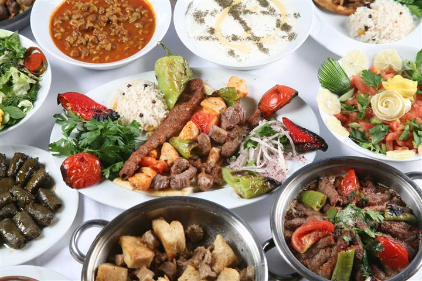
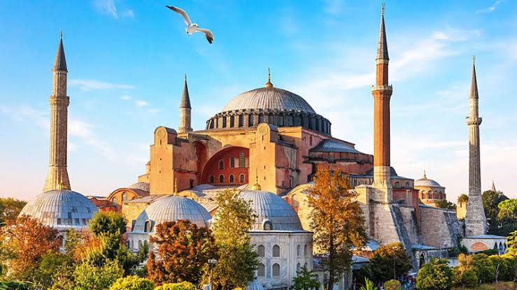

Визначні пам'ятки
Айя-Софія, Блакитна мечеть і палац Топкапи нагадують про багатошарову історію Стамбула.

Кухня та гастрономія
Кебаби, пахлава й турецький чай найкраще смакують на гамірному базарі або біля Босфору.

Культура та традиції
Мечеті, базари й поромні переправи через Босфор формують неповторний ритм міста.

Особисті історії
Особливо запам'яталася поїздка поромом на заході сонця, коли місто відкривалося з води.